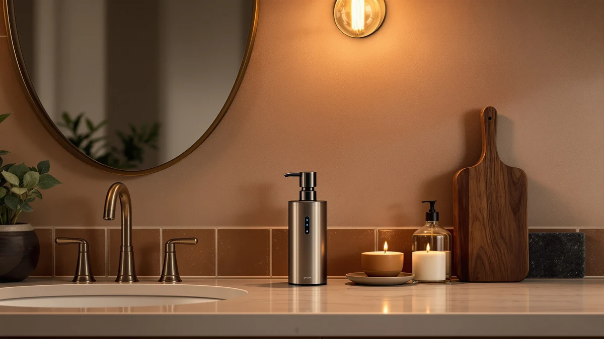

Phneems Automatic Soap Dispenser Review (2026): Worth It?
Prices and picks verified as of October 2026. Independent, reader-supported reviews.


Quick Answer
This phneems automatic soap dispenser review compares the $19.99 Phneems Automatic Soap Dispenser Touchless against three manual glass alternatives priced from $14.29. It weighs the infrared sensor and 9-ounce ABS plastic build against what the listings and verified owner feedback show for the cheaper picks. If you want a sensor-driven pump that keeps your hands off a soap-covered handle, the Phneems below is a solid place to start. If you'd rather skip batteries and save a few dollars, the OXO, YYTSGG, or JASAI alternatives cost less and skip the sensor entirely.
Our pick: Phneems Automatic Soap Dispenser Touchless, $19.99 Check Price on Amazon
Bottom line: our top pick is the Phneems Automatic Soap Dispenser Touchless Liquid Pump 9 oz at $19.99.
Things to Know Before You Buy
- This phneems automatic soap dispenser review focuses on the $19.99 Phneems Automatic Soap Dispenser Touchless, built with an infrared sensor and a 9-ounce ABS plastic reservoir.
- All three alternatives, the OXO Good Grips Soap Dispenser, the YYTSGG Green Glass Soap Dispenser Set, and the JASAI 2-Pack 18 Oz Green Glass, cost between $14.29 and $14.99, several dollars less than the Phneems pick.
- Only the Phneems pick in this review runs on a sensor. The three alternatives use a manual pump, so check whether hands-free operation is worth the extra cost before you choose.
- A touchless dispenser trades batteries or a charging cable for a pump you never have to press with soapy fingers.
- We did not physically use or own any of these dispensers. This phneems automatic soap dispenser review comes from comparing listed specs, pricing, and verified owner feedback.
This phneems automatic soap dispenser review compares the Phneems Automatic Soap Dispenser Touchless against three manual glass alternatives to help you decide whether a sensor-driven pump beats a bottle you press by hand. A soap-smeared pump handle at a shared kitchen or bathroom sink is the kind of small daily annoyance that a touchless dispenser is built to solve, and it does that without asking you to remember to wipe the handle down after every use. We researched the Phneems's listed infrared sensor, 9-ounce ABS plastic reservoir, and $19.99 price against the OXO Good Grips Soap Dispenser, the YYTSGG Green Glass Soap Dispenser Set, and the JASAI 2-Pack 18 Oz Green Glass. Our goal is to tell you whether the touchless format earns its higher price, and which alternative fits better if your sink calls for something simpler.
The short version is that the Phneems Automatic Soap Dispenser Touchless holds up well if you want a hands-free pump and don't mind keeping it charged or stocked with batteries. Our product data lists an ABS plastic build at $19.99, between five and six dollars more than any of the three glass alternatives. If you'd rather press a manual pump than manage a sensor, the OXO, YYTSGG, and JASAI picks below all undercut it at $14.29 to $14.99, and each brings its own material and capacity to the comparison. If you're weighing a touchless pick against a manual glass dispenser, you're probably comparing hygiene, upkeep, and price. This review works through those tradeoffs before you spend $19.99.
Why You Should Trust Us
Ilane Tall covers home and bath products for Best Soap Dispensers, and this phneems automatic soap dispenser review follows the same process behind every article on this site: pulling manufacturer specs, current pricing, and verified buyer feedback before drawing a conclusion. We do not run a fake testing lab, and we don't claim to have used or owned every dispenser we cover. Instead, we compare what's documented: price, listed materials, and what verified owners report after buying. When a listing leaves out details like exact sensor range or a published star rating, we say so here rather than filling the gap with marketing language. Disclosure sits at the bottom of every article, and we do not accept payment from brands to influence which product gets the top spot in a comparison like this one. Every price cited in this phneems automatic soap dispenser review comes directly from the product's current Amazon listing rather than an old cached page, so figures can shift slightly after publication.
Our Research Experience
We did not purchase or physically run the Phneems Automatic Soap Dispenser Touchless for this phneems automatic soap dispenser review. Instead, we compared its listed sensor, reservoir size, and price against three manual glass alternatives and cross-referenced verified owner feedback where it exists. This research-based approach means we can't report firsthand how the infrared sensor performs after months of daily use, but it lets us weigh objective facts, price and listed build, side by side without a single unit's manufacturing variance skewing the verdict. The sensor and battery compartment are usually the parts most likely to need attention over time on a touchless dispenser like this, and we factored that into the verdict below. At this price range, sensor reliability rather than the plastic housing itself tends to drive most complaints about automatic dispensers, which is one reason we weigh listed features alongside owner feedback rather than price alone.
Overview & Specs

Phneems Automatic Soap Dispenser Touchless
What we like
- Touchless infrared sensor avoids a soap-covered pump handle entirely.
- ABS plastic build keeps the unit light and resistant to cracking near a sink.
- At $19.99, it undercuts many touchless dispensers that run $30 or more.
Flaws but not dealbreakers
- Needs batteries or a charge for the sensor to work, unlike the three manual alternatives here.
- The 9-ounce reservoir is smaller than some manual glass dispensers, so refills come more often.
- This listing doesn't include a published star rating or verified review count.
| Material | ABS plastic |
| Size | 9oz |
The Phneems Automatic Soap Dispenser Touchless is built around a fixed, infrared sensor, and at $19.99 it's the most expensive product in this phneems automatic soap dispenser review. That price sits five to six dollars above each of the three glass alternatives, the OXO Good Grips pick, the YYTSGG green glass set, and the JASAI two-pack, priced between $14.29 and $14.99. For a kitchen sink that sees soapy, often-full hands throughout the day, a pump you never have to touch is a fair tradeoff for the higher price. It's the sort of upgrade that pays off in fewer smudges on the counter rather than in a single dramatic improvement.
Our product data lists ABS plastic and a 9-ounce reservoir as the Phneems's main specs beyond price, which points to a build meant to stay light and easy to refill rather than to impress with heft. The listing doesn't break out sensor range, battery type, or waterproofing beyond the housing material, so you're weighing a smaller, sensor-driven reservoir against the fuller glass bottles described in the three alternatives. Running on a sensor also means keeping it charged or stocked with batteries, a step none of the three manual picks require, so factor that upkeep into your decision if you aren't planning to check on it regularly. The sensor and pump mechanism are usually the first parts to show wear on any automatic soap dispenser, so keep an eye on how it performs after the first few months regardless of which pick you choose.
What We Liked
The biggest strength in this phneems automatic soap dispenser review comes down to hygiene. An infrared sensor keeps the Phneems dispenser's pump free of soapy fingerprints, which matters most at a kitchen sink where hands are often greasy or wet before they ever reach for soap, and an ABS plastic body in a compact shape should fit easily on a crowded counter next to dish soap or a sponge caddy. For a household that handles raw food prep daily, that combination is a real advantage over the three manual picks, and it's the kind of upgrade you stop noticing once it's installed, since you simply wave a hand instead of pressing a pump.
What Could Be Better
Price is the clearest drawback in this phneems automatic soap dispenser review's top pick. At $19.99, the Phneems dispenser costs five to six dollars more than each of the three glass alternatives, and running on a sensor adds an upkeep step, batteries or a charge, that none of the manual picks require. Our product data also doesn't list sensor range, waterproofing, or battery life beyond the housing material, and we can't point to a published star rating or review count for this listing. None of these gaps are dealbreakers on their own, but stacked against a manual dispenser that costs several dollars less and needs no power source, they're worth weighing before you commit to a touchless pump.
Who Is It For?
The Phneems Automatic Soap Dispenser Touchless fits a kitchen or bathroom where hands are frequently messy and a hands-free pump is worth paying extra for. This phneems automatic soap dispenser review points to it as a sensible choice if you're outfitting a busy household sink and want to cut down on smudged handles. It's a weaker fit if you'd rather avoid managing batteries or a charging cable, or if you want to save several dollars with one of the three manual alternatives below.
Alternatives to Consider
If the price or the upkeep gives you pause, three manual alternatives from this phneems automatic soap dispenser review deserve a look, including an ergonomic pick and two green glass sets. The OXO Good Grips Soap Dispenser costs $14.99, five dollars less than the Phneems touchless pick, and carries OXO's recognizable Good Grips branding without needing a sensor or battery. The YYTSGG Green Glass Soap Dispenser Set runs $14.39 and gives you a green-tinted glass set with a manual pump, a useful option if you want a dispenser that matches a specific counter color scheme. The JASAI 2-Pack 18 Oz Green Glass rounds out the group at $14.29 with two matching 18-ounce bottles, the lowest price of the four. None of the three carries a published star rating in our product data, so price, material, and capacity remain the more reliable factors to compare here.

Editor’s Pick
OXO Good Grips Soap Dispenser
The OXO Good Grips Soap Dispenser costs $5 less than the Phneems touchless pick and skips the sensor entirely, a straightforward pick if hands-free operation isn't your main priority.
$14.99
Check Price on Amazon
Best Value
Green Glass Soap Dispenser Set
The YYTSGG Green Glass Soap Dispenser Set runs $14.39 for a green-tinted glass set with a manual pump, worth considering if you want a dispenser that matches a specific counter color scheme.
$14.39
Check Price on Amazon
Premium Choice
JASAI 2Pack 18Oz Green Glass
The JASAI 2-Pack 18 Oz Green Glass undercuts the Phneems pick at $14.29 and brings two matching 18-ounce bottles, useful if you want soap at two sinks without buying separate dispensers.
$14.29
Check Price on AmazonFrequently Asked Questions
Is the Phneems Automatic Soap Dispenser Touchless worth buying?
Based on our research, the Phneems Automatic Soap Dispenser Touchless is worth buying at $19.99 if you want a sensor-driven pump and don't mind that the listing skips a published star rating. This phneems automatic soap dispenser review found the touchless sensor and 9-ounce ABS plastic build reasonable enough to make it our pick, provided you're comfortable keeping it charged or stocked with batteries.
How does the Phneems compare to the OXO, YYTSGG, and JASAI alternatives?
The OXO Good Grips Soap Dispenser, the YYTSGG Green Glass Soap Dispenser Set, and the JASAI 2-Pack 18 Oz Green Glass all cost less than the Phneems touchless pick, ranging from $14.29 to $14.99, and all three rely on a manual pump rather than a sensor.
Is a touchless soap dispenser better than a manual glass one?
Neither format is inherently better. A touchless dispenser like the Phneems avoids a soap-covered pump handle but needs batteries or a charge, while a manual glass dispenser like the OXO, YYTSGG, or JASAI needs no power source and typically costs less.
Final Verdict
This phneems automatic soap dispenser review comes down to a simple tradeoff. The Phneems Automatic Soap Dispenser Touchless's sensor-driven design and $19.99 price make it a solid pick for a sink where messy hands are a daily reality, as long as you accept battery or charging upkeep and a listing without a published star rating. If you'd rather skip the sensor and save a few dollars, the OXO Good Grips pick is a close match, and if two matching bottles for two sinks appeal to you, the JASAI two-pack is worth a look. For shoppers who want a tinted glass look on the counter, the YYTSGG green glass set rounds out the group at $14.39. For most people comparing a phneems automatic soap dispenser review's top pick against manual glass alternatives, the Phneems Automatic Soap Dispenser Touchless is a fair buy, provided the battery upkeep doesn't change your mind.